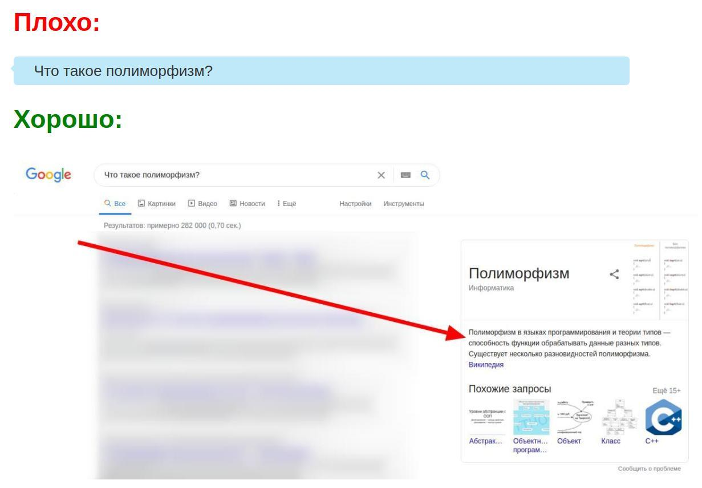

Пожалуйста, научись гуглить!
Не спрашивай в чатах/форумах вопросы формата:
Такого рода вопросы можно нужно гуглить!
Гуглить значит открыть Google и ввести свой вопрос туда!
- «Я понял, но что плохого в том, что я задаю такие вопросы в чатах/форумах?»
- 99% ответов на все Ваши вопросы, которые Вы хотите задать в чатах/форумах, уже давным давно можно найти в Google(или в других поисковых системах), тем самым не только быстро получить ответ на свой вопрос, но и лишний раз не тревожить других людей.
Это не означает, что спрашивать вопросы в чатах запрещено или неэтично. Нет, однако если у Вас возник какой-либо вопрос, сначала прогуглите его, а затем, если Вы не нашли ответа, можете
поискать в
Яндексе
спрашивать свой вопрос в чатах/форумах.
Суть одной картинкой:
